🦅 图拉真
Trajan · 设计：Stefan Feld · 美术：Jo Hartwig · HUCH! & friends 出版
📌 说明
本页文字由官方中文规则书图片（13 页）逐页转录整理，文末附原书扫描图。原书为繁体中文，转录统一转为简体，译名保留原书官译（米宝、军事领袖、图拉真拱门、论坛板块等）；原书个别误印照录并加注，跨行重出的「板块」二字径删。
游戏简介（p1）
西元 110 年是罗马帝国最光荣的一年，图拉真，罗马帝国五贤帝之一，是第一位非意大利出生的罗马皇帝，他在位时立下显赫的战功，扩展极盛的帝国领土；当时的元老院曾赠给他「最优秀的第一公民」的称号。现在，运用你的智慧和谋略来统治罗马王国，把握你每次行动的时机，带领你的将士击败对手获得胜利吧。
产品奖项：
- 2012 Deutscher Spiele Preis 最佳家庭/成人游戏第二名
- 2012 International Gamers Award 国际玩家奖-策略型（多玩家人数）得奖
- 2013 Games Magazine Game 游戏杂志 年度冠军
游戏配件（p1–2）
- 1 块游戏板：显示出部分的罗马帝国，从罗马的元老院到图拉真拱门、论坛还有遥远的 Britannia（布列坦尼亚省）与 Germania（赫尔马尼亚省）的海港。这个游戏板由 6 个区域组成，这个区域都有指定的特定行动，六种各具特色的行动，组合出许多不同的取分方式，让每一局游戏都充满变数。
- 60 个米宝：四种颜色（红、绿、深蓝、棕），每位玩家各 15 个，他们可代表玩家的工人或是士兵。
- 4 个军事领袖与 8 个小圆盘——4 个玩家的代表色：军事领袖和军人可以占领各省份。每位玩家各有 2 个小圆盘，一个放在计分轴上纪录胜分；一个放在元老院纪录投票。
- 4 个玩家代表色的玩家板：由 6 个圆盘组成的行动圆环及玩家从游戏中收集到不同的板块所摆放的位置。
- 4 个图拉真拱门：每位玩家一个，在玩家版上替新的图拉真板块标注新的位置。
- 4 组八角型的行动指示物：依据下列的颜色共有 12 个指示物：黄、橘、绿、白、粉红、蓝 6 色，每组颜色各 2 个。
- 1 个时间指示物：用来纪录游戏中消逝的时间。
- 60 张商品卡：12 种商品，每种各 5 张。
- 9 种不同的板块：70 个论坛板块、54 个图拉真板块、20 个建筑板块、12 个额外行动板块、24 个 +2 指示物、15 个需求板块（面包、头盔、火焰）、4 个四季板块、3 个船型板块、12 个奖励板块。
- 1 只束口袋：用来抽取奖励板块。
（图示：行动圆环上可「放置板块」，外圈为「放置米宝」；下方一排「+1」格为行动圆环。）
游戏目标（p2）
玩家可借由六种不同行动来获得胜分，致胜关键就是策略的调配圆盘上的行动指示物。玩家把握各项行动最佳的时机，一方面利用机会取得板块；另外一方面可制造让其他玩家陷入困境的机会。不管你第一次玩的结果如何，多玩几次之后你会更有经验并学会更多的精进技巧。
游戏设定（p3）
- 将游戏板展开放在桌面中央。
- 玩家选择一个代表色，并拿取 1 个玩家板、1 个军事领袖、15 个米宝还有 2 个小圆盘用来纪录胜分与元老院的位置。此外，每位玩家还会拿到 1 个图拉真拱门与 12 个行动指示物（黄、橘、绿、白、粉红、蓝 6 色，每组颜色各 2 个）。
- 将额外行动板块与论坛板块依背面颜色分类洗匀后，面朝下置於游戏板旁边。
- 接下来，随机抽取下列板块，面朝上放游戏板中（见下列图示）：10 个论坛板块放在各省份（每个省份各一个），然后依据游戏人数不同，放置 6 个/2 人、9 个/3 人、12 个/4 人，放指定的论坛空格。
- 另外放置 3 个额外行动板块在论坛区的黄色区域。
- 在建築区里面的空格放置 20 个建筑板块（每个空格放一个）。
- 在与玩家人数相对应的时间轴，在起点上放置时间指示物。
- 玩家部署各自的军事领袖与 1 个米宝於军营，另外在工作区放置 1 个米宝，剩下的 13 个米宝放置於玩家板上的指定区域。
- 每位玩家放置图拉真拱门於玩家版上「Ⅰ」的位置。
- 在抽图拉真板块之前，玩家分配自家的行动指示物在每个圆盘上，每个圆盘可以任意分配两个行动指示物。
- 分配完行动指示物后，将图拉真板块依照六种不同图像分类，每堆洗牌之后叠起来放在游戏板上的 6 个空格上。
（设置图示注记：每个玩家将军事领袖与 1 个米宝放在军营；每个玩家放 1 个米宝在工作区；在每个省份放置一个论坛板块（面向上）；随机放置建筑板块在建築区（面向上）；放置 3 个额外行动板块在论坛区的黄色区域；依据玩家人数不同，放置 6 个/2 人、9 个/3 人、12 个/4 人论坛板块放置论坛区右方；此栏用来判定玩家数量；放置 3 张船型板块，黄色面朝上；6 叠图拉真板块放置处；★玩家板：放置米宝、行动图板上放置 12 个行动指示物、一个图拉真拱门、三张图拉真板块；四位玩家的时间轴起始处；胜分轴，将玩家圆盘推叠放起始处；季板块；额外行动板块/需求板块/论坛板块/+2 板块。）
游戏准备（p4）
- 玩家可随机决定起始玩家。
- 起始玩家开始，顺时针轮放 1 个小圆盘在元老院起始处，玩家依序堆叠。（起始玩家在最下方）
注意：堆叠顺序是非常重要的，因为在平手的状况下，在圆盘堆中最上方的玩家最有利。
- 玩家在胜分轴上放置自家的另外一个圆盘（圆盘的顺序并无影响）。
- 每位玩家从束口袋抽出一张奖励板块，黄色面朝上放在自家前面。
- 另外抽 2 张奖励板块放在元老院右边的位置上，黄色面向上。
- 商品卡洗牌后，面向下堆叠放置在游戏板旁边，翻开最上面的两张商品卡面朝上放在牌堆两边，此两边为弃牌区。
- 从起始玩家开始，玩家按照顺序抽取 3 张商品卡至手中，玩家可任意选择从牌堆中或是弃牌堆中抽卡片。
- 只要弃牌堆的卡片空了，翻开牌堆中最上面的卡片放置在弃牌区。
- 游戏准备的最后一个步骤，从起始玩家开始，所有玩家依顺序选择 3 张图拉真板块（三张必须不同种类），并将选取的图拉真板块任意放在个人玩家板的 Ⅱ / Ⅳ / Ⅵ 的位置上。
（图示注记：元老院的起始处，四人游戏版本；胜分轴的起始处，四人游戏版本；元老院放置奖励板块处；商品卡：左边和右边放置面向上的弃牌区，中间放置面向下的主牌区；6 种图拉真板块种类；6 堆依据种类放置的图拉真板块。）
游戏规则（p4）
游戏进行一年，一年有四季，每一季有四轮，时间轴上的指示物走一圈为一轮，每轮结束取决於时间指示物。
提示：圆盘上的行动指示物会影响每轮时间的长短。因为行动指示物的数量会影响时间指示物要走几步，如果一次移动的行动指示物越多，时间轴会移动的越快。（时间指示物走完时间轴一圈为一轮。）
玩家的回合（p5）
玩家的回合以下列步骤依序进行：
- 重新分配行动指示物与移动时间指示物（强制执行）。
- 完成图拉真板块（如果符合即执行）。
- 执行一个行动（可选择要不要执行）。
重新分配行动指示物（强制执行）
玩家选择玩家板上的一个圆盘（上面至少要有一个行动指示物），拿取上面所有的行动指示物，大声的宣布行动指示物的数量。接下来，玩家将行动指示物顺时钟方向逐一放置在每个圆盘上，直到数量被分配完，玩家可自行选择要放哪个颜色的行动指示物在哪个圆盘上，最后放置行动指示物的圆盘则为目标圆盘。
注意：如果选取的圆盘上面多於 6 个行动指示物，分配的时候一次放 1 个在圆盘上，顺时针摆放，不能穿插放，但有可能会绕到第 2 圈。
（图示：海港行动圆盘（目标圆盘）、图拉真行动圆盘。例如：玩家选择图拉真行动的圆盘，并将圆盘上的 2 个行动指示物顺时钟方向分配，最后一个行动指示物放在海港行动的圆盘，这就是目标圆盘。）
移动时间指示物（强制执行）
此回合的玩家喊出行动指示物的数量后，其右边的玩家依照喊出的数量依顺时针方向移动时间轴上的时间指示物。移动格数＝玩家选择托盘行动指示物数量〔原文如此，即所选拿起圆盘上的行动指示物数量〕。
每轮游戏结束：只要时间指示物到达或是超过起点的时候，此回合结束於正在玩的玩家完成此回合。四轮为一季，四季即游戏结束。在一轮结束、一季结束或是游戏结束的时候，某些行动必须要被执行在下一位玩家开始之前（p.9 有注解）。
（图示：移动了 2 个行动指示物，时间指示物也往前移动 2 个；移动了 4 个行动指示物，时间指示物也往前移动 4 个，通过起始点。）
完成图拉真板块（如果符合即执行）（p6）
如果行动指示物的颜色与目标圆盘旁边的图拉真板块相符合时，玩家完成此图拉真板块并将此板块从玩家板上移出，获得板块上的相对应胜分，且可以执行板块上特殊的行动。
执行完图拉真板块后即将此板块从游戏中移出，除了（面包、头盔、火焰）的图拉真板块不移出游戏，须放置玩家板中直到游戏结束计时分。
注意：目标圆盘内的行动指示物的数量与颜色如果不同於图拉真板块是不影响的。
（图注：最后一个放在圆盘上面的行动指示物是蓝色，此圆盘上已经有两个符合图拉真板块的行动指示物，玩家获得 5 分，亦可以将一个自家米宝放到工作区，完成之后此图拉真板块移出游戏。）
执行一个行动（可选择要不要执行）
不管玩家是否有完成图拉真板块，他们可以选择执行目标圆盘上指定的行动。每个圆盘上都各有指定的行动，以下介绍各项行动：
海港行动（p6）
玩家有 4 种选择，择一执行：
- 玩家从牌堆中抽取 2 张商品卡至手中，然后选择一张商品卡面朝上置於弃牌区（左右两边择一）。
- 从两堆弃牌区中选一张最上面的商品卡。
- 玩家打出 1 张或 2 张商品卡面朝上在自家前面，此为玩家的个人游戏区，可能在游戏结束时可结合奖励板块获得额外的胜分，再从牌堆中抽回等数量的商品卡。
- 玩家也可以把商品运上船，藉由完成商品卡与船型板块的组合。玩家从手中出与船型板块相同的商品卡用来获得胜分，得到胜分后将商品卡置於个人游戏区，在游戏结束的时候可结合奖励板块获得额外的胜分。
如果船型板块是黄色面向上，得分之后将船型板块翻面（灰色面）；如果船型板块是灰色面向上，得分之后则不用再翻面，保持灰色面向上。
| 运载方式 | 黄色面 | 灰色面 |
|---|---|---|
| 相同商品：1 / 2 / 3 / 4 张 | 2 / 6 / 12 / 20 分 | 0 / 1 / 7 / 15 分 |
| 成对商品：1 / 2 / 3 对 | 5 / 10 / 15 分 | 1 / 6 / 11 分 |
| 不同商品：1 / 2 / 3 / 4 张 | 2 / 4 / 6 / 8 分 | 0 / 1 / 3 / 5 分 |
论坛行动（p7）
玩家可从论坛区选取任一板块，然后放在玩家板相对应的位置。
（图示：这是论坛区 3 个额外行动板块与 6、9、12 个论坛板块（依据游戏玩家人数不同）。提示：若玩家板空间不够，可堆叠摆放。）
军事行动（p7）
玩家有 3 种选择，择一执行：
- 玩家把 1 个米宝从玩家板上的个人补给区放至游戏板上的军营，此米宝变成士兵直到游戏结束。
- 玩家移动军事领袖到相邻的省份，如果该省份上有板块，可以获得此板块放到玩家板上，军营相邻的省份，例如：Britannia（沿著绿色的点点线）。>>游戏板上有绿色的点点线，标示出相邻的省份。
- 玩家将军营内的士兵放到有军事领袖的省份，同一省份内只能有一个自家士兵，如果该省份上没有其他玩家的士兵，玩家即可获得该省份上标示的胜分。如果该省份上有其他玩家的士兵，则多一位士兵就少 3 分。
＊重要：每个省份上面都只能有一个自家士兵。
- ★注意 1：士兵不能在省份之间移动，只能移动到有军事领袖的地方。
- 注意 2：玩家在省份得到的胜分不会低於 0 分。
（图注：★军事领袖只能移动到相邻的省份。）
图拉真行动（p7）
玩家从 6 堆图拉真板块中选择 1 个最上方的板块，放到玩家板上图拉真拱门的格子内，图拉真拱门则顺时针方向移动到下一个空格处。如果 6 个空格都放满图拉真板块了，则将拱门放置於行动圆环的中央，等有空格时再把拱门放於空格里。当所有空格都放满图拉真板块时，玩家无法执行图拉真行动。
（图注：玩家把图拉真板块放到玩家板上图拉真拱门的格子里「Ⅰ」，则图拉真拱门顺时针方向移动到下一个空格处「Ⅲ」。）
元老院行动（p8）
玩家将在元老院的圆盘往前移动一格，并获得上面的胜分，如果此格已经有其他玩家的圆盘，则将自家圆盘叠放在其他玩家的圆盘上。一旦玩家到达 8 分的格子时，该玩家此季无法再执行元老院行动。
（图注：玩家将圆盘往前一格，从标示 4 胜分的格子移到标示 5 分的格子内，并获得 5 分。）
建筑行动（p8）
玩家有 2 种选择，择一执行：
- 玩家把一个米宝从玩家板上的个人补给区放置於游戏板上的工作区，此米宝变成工人直到游戏结束。
- 玩家把一个工人从工作区放置到建筑区，如果是第一次放，可以任选想放的位置；之后要放第 2 个以上的工人时，则须放置现有自家工人相邻的位置。（不可对角放）
- 若工人放置处有建筑板块时，玩家将此板块放到玩家板上相对应的图示位置，并获得上方标示的胜分。
- 如果玩家是第一次获得该种类的建筑板块，可额外执行一个行动。行动标示在玩家板上。这只有在玩家第一次获得该种类的建筑板块时才可执行。
- 如果玩家想要将自家工人放到有其他工人的建筑区时，此时玩家无法获得建筑板块，但是可以帮助他们缩短接近其他更有利的建筑板块的距离。
（图注左：玩家选择一个建筑板块，并将此板块放置在玩家板上相对应的位置。此空格是第一次放置建筑板块，玩家可以额外执行格子内所标示的行动。图注右：绿色玩家放置工人到建筑区，但是上面已经有蓝色工人了，绿色玩家虽不能获得任何胜分或板块，但在下一回合绿色玩家也有机会获得 4 分的建筑板块。）
每轮结束与游戏结束流程（p9）
★游戏结束：每轮结束，当时间指示物到达或是通过时间轴起点，该轮结束於正在玩的玩家完成此回合。
- 翻开一个需求板块，放置於游戏板旁所有玩家都看得到的位置。
- 上轮结束的下一位玩家开始下一轮的游戏，时间指示物在上一轮游戏结束后的位置不变，新的一轮开始后继续往前移动。
- 如果游戏板旁已经有 3 个翻开的需求板块，当第四轮结束时，此季结束，不用翻开第四个需求板块，即开始季结算。
（图注：时间指示物已完成第一轮，第一个需求板块被翻开。此季结束於第四轮结束，已经翻开 3 个需求板块，不用翻开第四个。）
季结算（p9–10）
1. 满足人民需求
◎人民会提出三个需求，每位玩家必须要满足人民所提出的需求。为了满足这些需求，每位玩家必须支付人民所提出的需求板块相同的论坛板块。玩家也可以用图拉真板块来满足人民需求，图拉真板块每季只可使用一次。〔原文跨行重出「板块」二字，径删〕
◎所有的论坛板块支付人民的需求之后即移出游戏，图拉真板块支付此季的人民需求之后可以继续留在玩家板上（下一季可以继续使用）。
◎如果玩家无法支付人民的需求，则会扣减胜分，如下：
- 少一个需求……扣 4 分
- 少二个需求……扣 9 分
- 少三个需求……扣 15 分
重要：在可以支付需求的前提下，玩家一定要支付需求，不能故意不支付而故意失掉胜分。
（图注：这季的需求如左图，玩家有 2 个论坛板块和 1 个图拉真板块，此玩家支付钢盔的论坛板块（支付后移出游戏）还有图拉真板块（支付后继续使用），玩家无法满足人民的面包需求，扣 4 分。注意：如果玩家胜分轴上的圆盘低於胜分轴上的起点，往后的每个空格都扣一分。）
2. 平衡元老院势力
◎所有玩家透过投票表决获得元老院的势力。
◎每位玩家票数的加总＝根据自家圆盘在元老院位置上的划记＋玩家板上所有元老院板块的划记。
（图注：绿色玩家和棕色玩家在元老院轴上同样获得 5 分，依据目前平手的状况下，因为绿色圆盘在咖啡色圆盘的上方，所以绿色为赢家。然而，棕色玩家拥有一个元老院板块价值 3 分，因此棕色与绿色的票数比为 8:5。）
玩家获得元老院最多的票数被指派为领事，可以选择一张元老院右边的奖励板块，黄色面朝上放置於自家前面。
- ◎玩家获得第二高票被指派为副领事，可以拿取元老院右边的另外一个奖励板块，灰色面朝上放置於自家前面。
- ◎在平手的状况下，则先比较元老院的位置，如果位置还是相同，则比较圆盘叠起来的位置，越在上方的玩家赢。
- ◎接下来，将圆盘重新放回元老院起点叠成一叠，票数最少的玩家放在最下面，元老院领事的圆盘则放在最上层。
（图注：因为棕色玩家在元老院中获得较多的票数，所以被指派为领事，选择了位於元老院右边的奖励板块左边那张。绿色玩家被指派为副领事，拿取剩下的奖励板块，灰色面朝上至於自家前面。）
3. 移除与重设板块（p10）
每一季结束时，首先，将下列的板块移出游戏中：
- ◎移除所有用来支付人民需求的论坛板块（没有用来支付的论坛板块可以留著）。
- ◎移除所有元老院板块。
- ◎移除所有论坛区的论坛板块（包含额外行动板块）。
将下列板块面朝上放入游戏板中：
- ◎抽出两张新的奖励板块置於元老院右边，黄色面向上。
- ◎补充新的论坛板块到各省份上，有军事领袖或是士兵的省份不用补充。
- ◎放置新的论坛板块在论坛区，黄色空格则放置新的额外行动板块。
以上板块皆为随机抽取且面朝上放置。
将船型板块翻回黄色面向上
◎移除季节板块进入下一季，如果最后一季的板块被移除，即游戏结束，进入最终结算。
（图注：▲未使用完的论坛板块，在新的一季开始前全部移除。▲补充新的论坛板块置於这两个省份。▲补充论坛区的所有论坛板块（此为四人游戏的数量）。▲每一季的开始都将灰色的船型板块翻至黄色面。）
游戏结束与最终结算（p11）
在最后的季结算之后就开始最终结算，玩家可依据下列规则获得更多胜分：
| 项目 | 分值 |
|---|---|
| 每张在手中的商品卡 | 1 分 |
| 每个工作区的工人 | 1 分 |
| 每个军营中的士兵 | 1 分 |
| 每个行动圆环上的图拉真板块 | 1 分 |
| 三个相同的建筑板块 | 10 分 |
| 四个相同的建筑板块 | 20 分 |
加总胜分之后，获得最高分的玩家为赢家；在平手的状况下，则依元老院的位置来判定，位置越高的玩家为赢家。
每个奖励板块………见下列规则说明。
奖励板块计分
- 需求类（1X）——黄色面：玩家至少有一个该类型（面包、头盔、火焰）的论坛板块（非图拉真板块），即可得 9 分。灰色面：玩家至少有一个该类型（面包、头盔、火焰）的论坛板块（非图拉真板块），即可得 6 分。
- 商品类——黄色面：个人游戏区有一张与板块相对应图案的商品卡可得 3 分。灰色面：个人游戏区有一张与板块相对应图案的商品卡可得 2 分。
- 工人类——黄色面：每个在建筑区的工人获得 1 分。灰色面：每个在建筑区的工人获得 1/2 分（四舍五入）。
- 士兵类——黄色面：在各省份的每个士兵可得 2 分。灰色面：在各省份的每个士兵可得 1 分。
- 板块类——黄色面：每张黄色面向上的板块可得 3 分。灰色面：每张黄色面向上的板块可得 2 分。
板块与万用卡说明（p12）
- 论坛板块：所有论坛板块的背面都是相同的。
- 元老院板块：在平衡元老院势力的时候，元老院板块可增加 2~5 票，在季结算过后即移出游戏。
- 人民需求板块：板块的图案与人民的需求相对应，一但用来支付人民的需求之后，即移出游戏，玩家可保留未支付过的板块。
- 万用商品卡：此万用卡可用來替代任意一张商品卡，使用过后即移出游戏；如游戏中未被使用，在最終结算的时候可以搭配奖励板块使用。
- 万用需求卡：此万用卡可用來替代任意一个需求板块用来支付人民需求，使用过后即移出游戏。
- 万用建筑卡：此万用卡可用來替代任意一个建筑板块，最終结算时以利於加分。
- 万用额外行动卡：此万用卡可用來替代任意一个额外行动板块，使用过后即移出游戏。
额外行动板块（万用额外行动卡）
在玩家执行某项行动过后，若玩家有与此行动相同的额外行动板块，即可再执行此行动一次，额外行动板块使用过后即移出游戏。若玩家拥有该项行动指定的 +2 板块，即可额外执行此行动 2 次，+2 板块使用后不用移出游戏。玩家在每回合里只能执行一种额外行动。
注意：如果是执行建筑行动所标示的额外行动（玩家第一次获得该种类的建筑板块，可执行建筑板块所标示的额外行动一次），玩家也可以使用额外行动板块。
图拉真板块的特殊行动
下列的图拉真板块在执行板块上相对应的行动后即移出游戏，并获得板块上显示的胜分：
- 3 分：玩家从牌堆上抽取 2 张商品卡。
- 5 分 / 2 分：玩家从个人补给区拿 1 个/2 个米宝放置到工作区，此米宝变成工人直到游戏结束为止。
- 5 分 / 2 分：玩家从个人补给区拿 1 个/2 个米宝放置到军营，此米宝变成士兵直到游戏结束为止。
- 9 分：没有特别行动，玩家获得 9 分。
- 4 分（+2）：玩家得到一个 +2 板块，并将它放到一个额外行动板块旁的空格里（可以自己选择要执行哪个行动，一但放定了就不能移动）。
★下列图拉真板块使用过后不用移出游戏：1 分的面包、头盔、火焰板块——这些板块（面包、头盔、火焰）在玩家每季结算时用来支付人民的需求之后，则移出游戏。
游戏摘要（p13）
- 游戏长度：共 16 轮
- 游戏分成四季，共一年。
- 每一季＝四轮。
- 一轮＝时间轴上的时间指示物走一圈。
- 玩家回合：
- 重新分配行动指示物（强制执行）：◎选择起始圆盘 ◎决定目标圆盘 ◎移动时间指示物
- 完成图拉真板块（如果可以即执行）：◎获得胜分 ◎特别行动（选择性）
- 执行一个行动※（可自己选择要不要执行）：※可增加额外行动 ◎目标托盘上相对应的行动
海港行动 论坛行动 图拉真行动 元老院行动 ★建筑行动 军事行动 注：★可增加额外行动
- 每轮结束：当时间指示物到达或是通过时间轴起点，此轮即结束。◎翻开需求板块 ◎第四轮结束时不用翻开需求板块，即进行季结算。
- 季结算：
- 支付人民需求（无法支付时则扣分）。
- 平衡元老院势力（获得多数票的 2 位可获得奖励板块）。
- 移除板块。
- 补充板块於：◎省份 ◎论坛 ◎元老院
- 将灰色船型板块翻回黄色面。
- 移除季节板块。
- 游戏结束：四季之后的最終结算，玩家可依据下列规则获得更多胜分：
- ◎每张在手中的商品卡……………1 分
- ◎每个工作区的工人………………1 分
- ◎每个军营中的军人………………1 分
- ◎每个行动圆环上的图拉真板块…1 分
- ◎三个相同的建筑板块……………10 分
- ◎四个相同的建筑板块……………20 分
- ◎每个奖励板块…………请参阅 p11 图示说明
原版规则书图片（扫描版）
📖 展开查看原版规则书扫描图（13 页，点击放大）
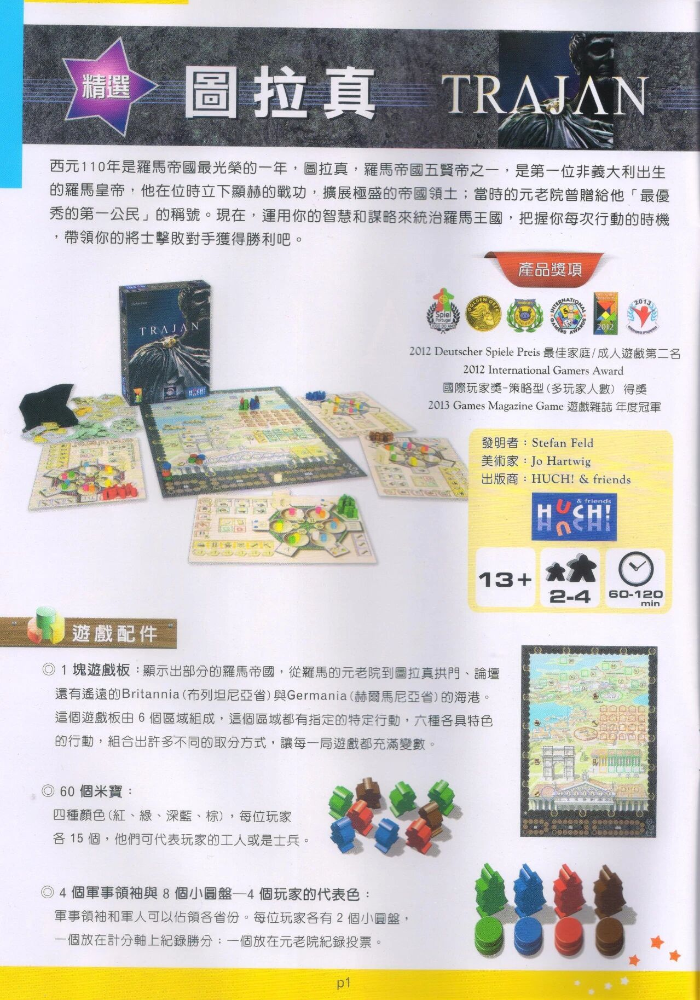
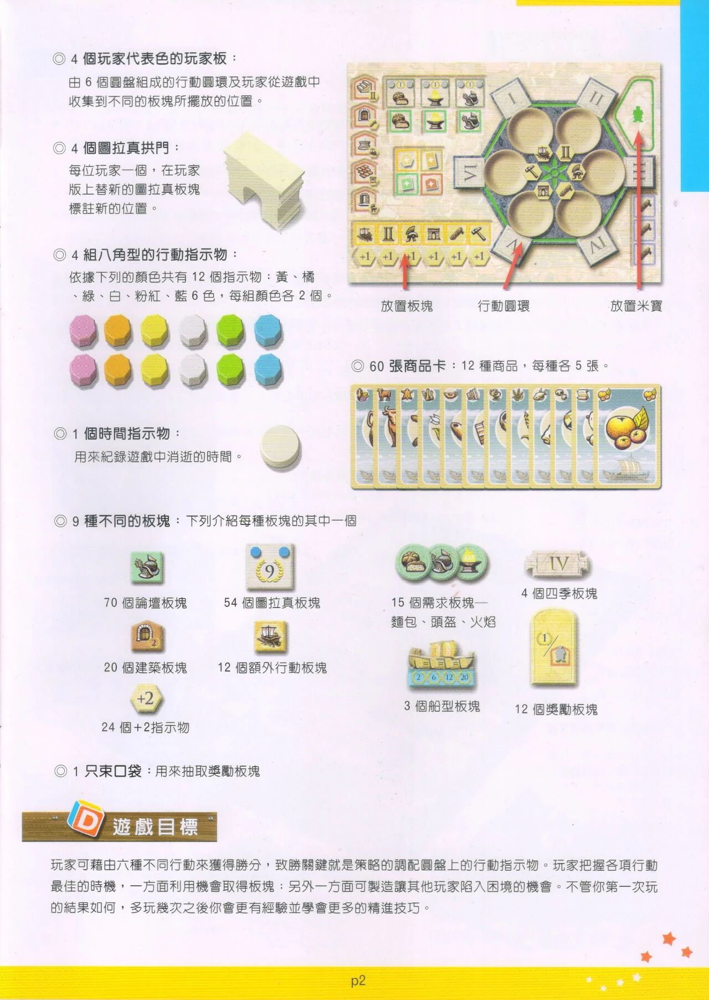
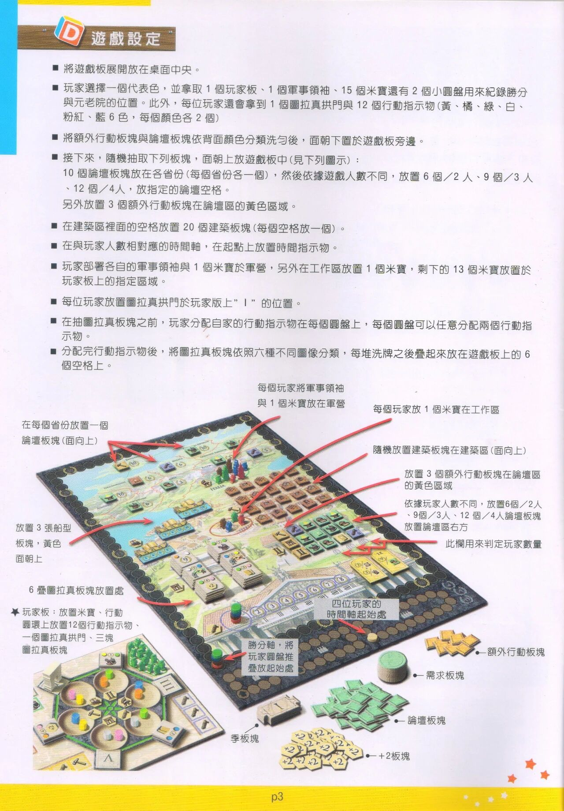
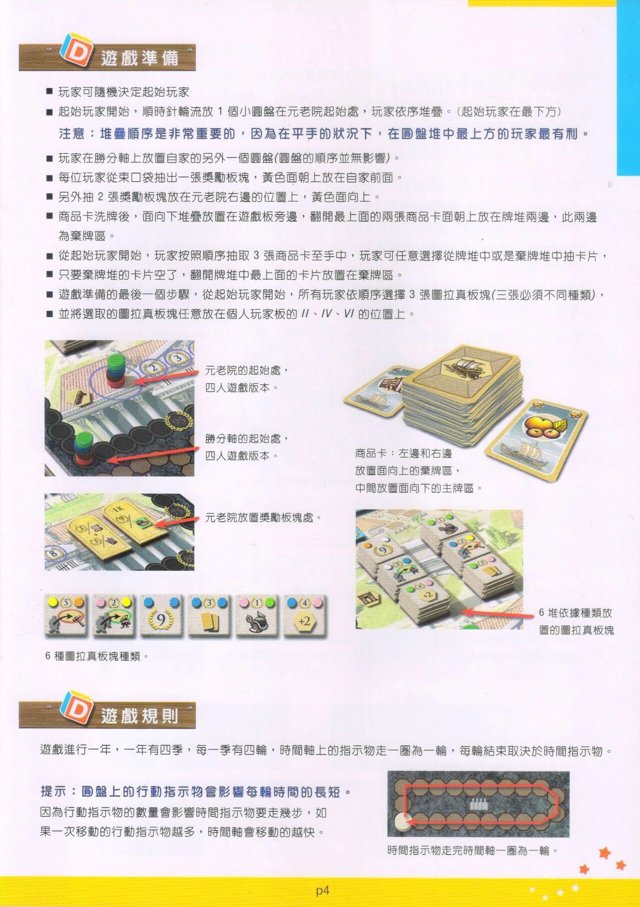
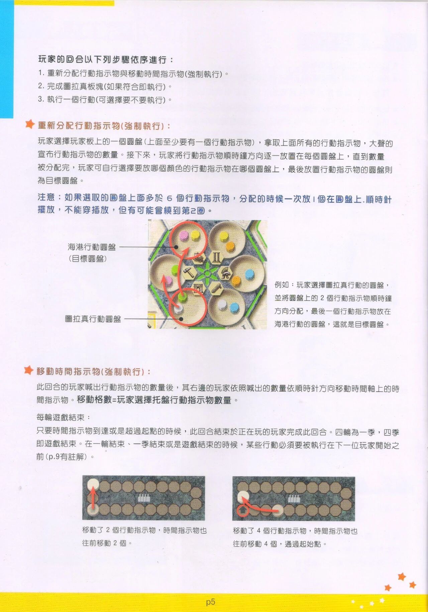
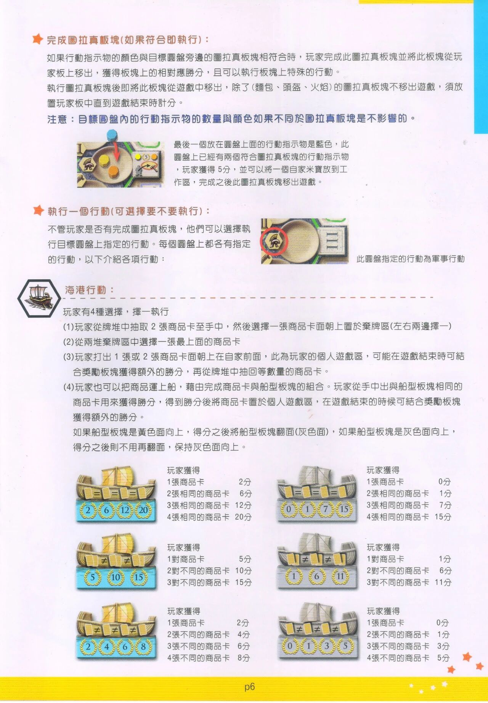
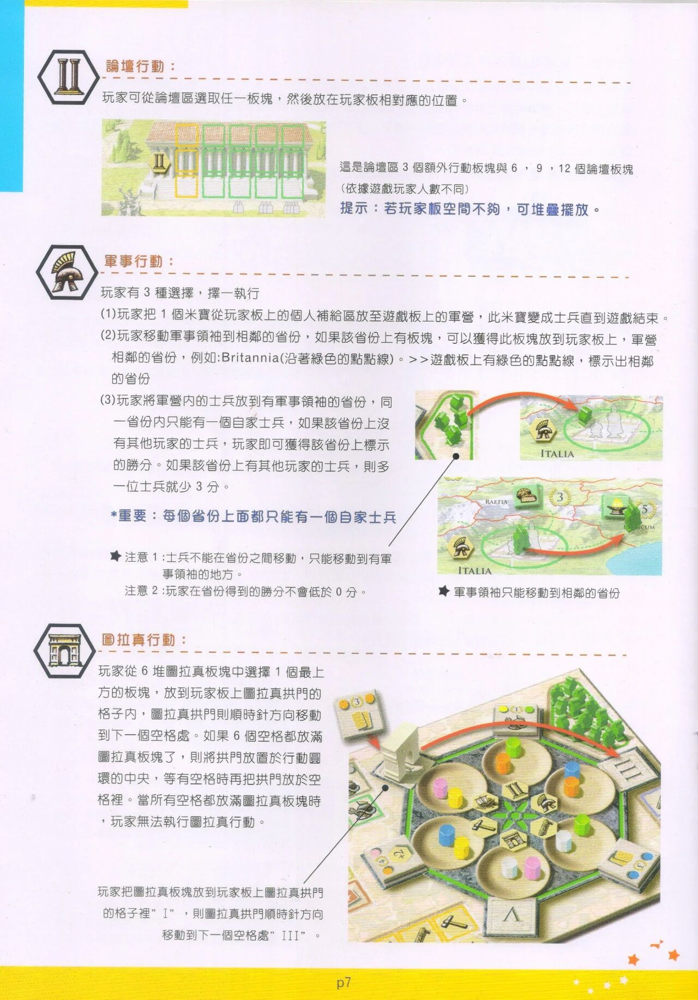
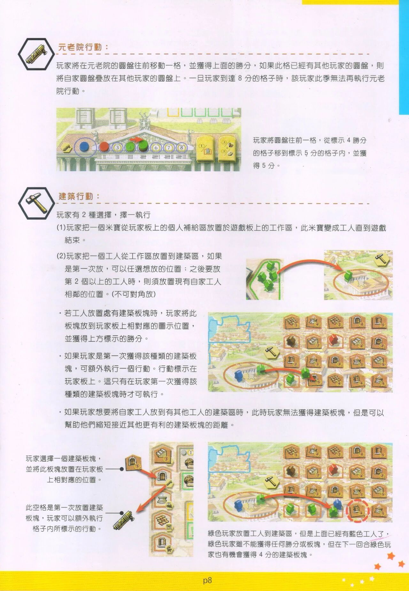
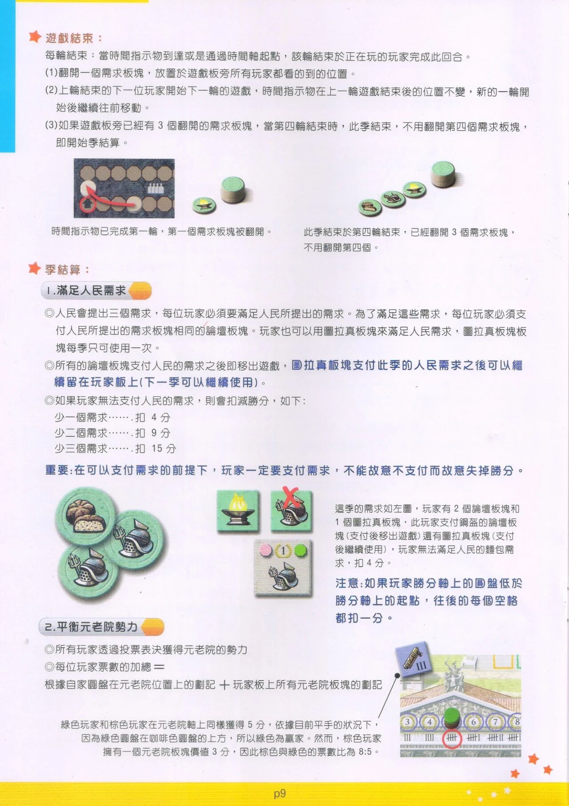
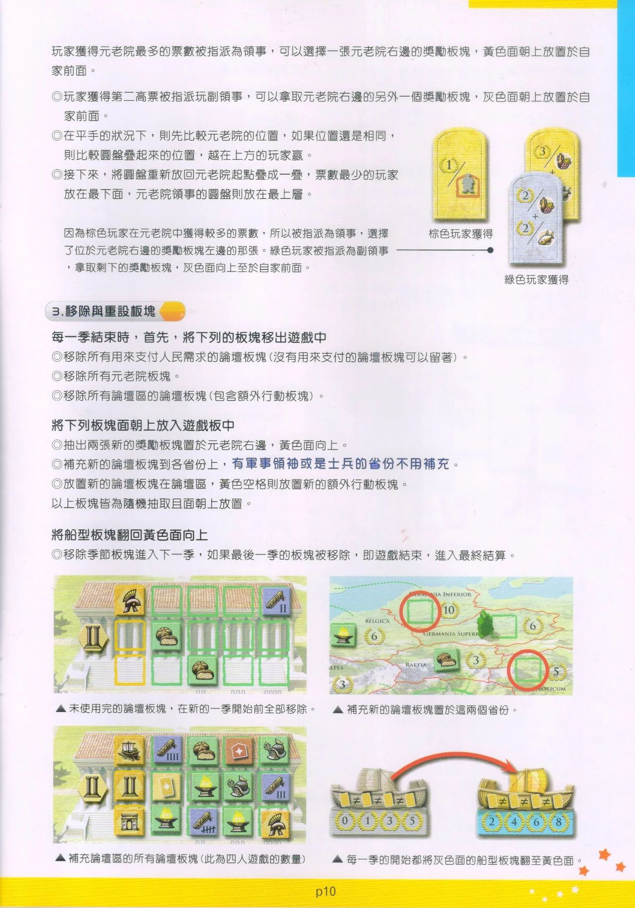
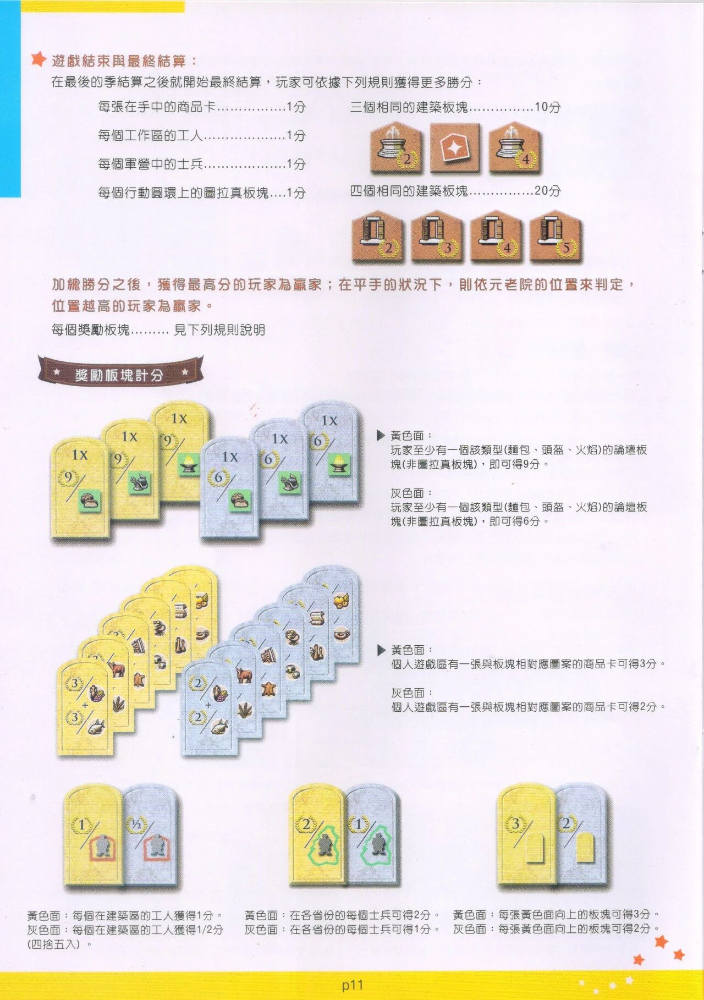
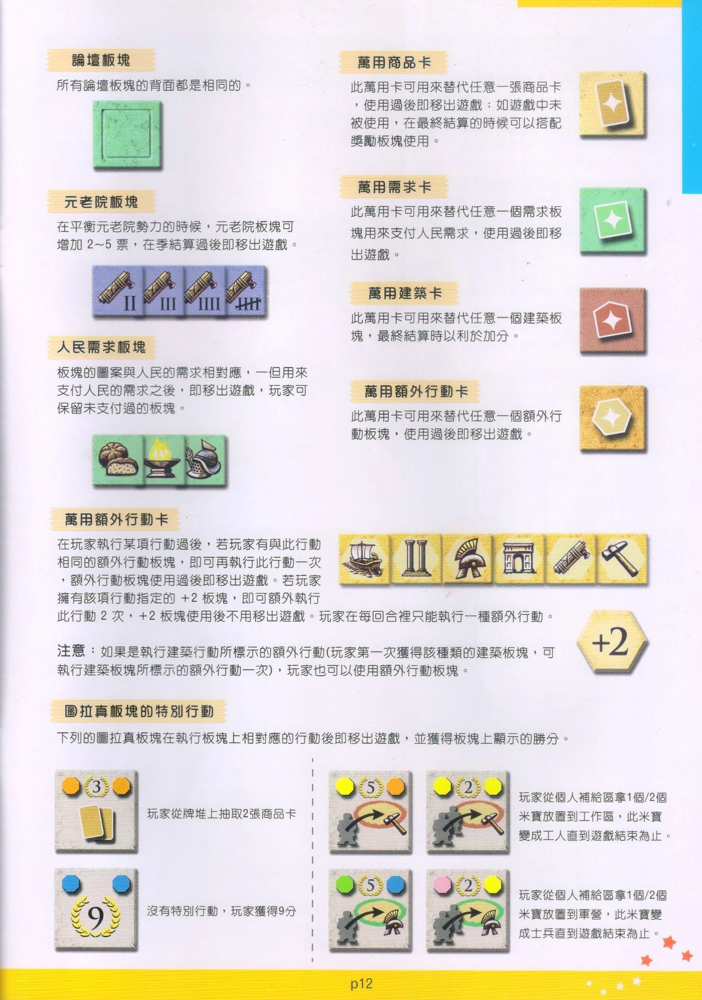
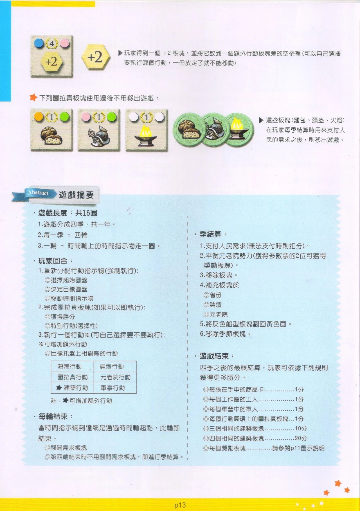